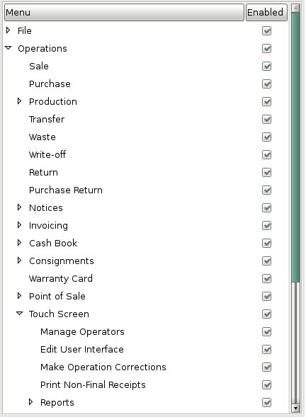
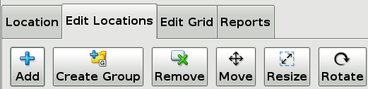
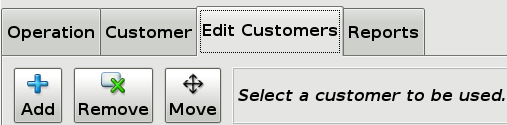
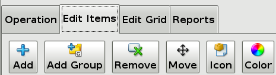
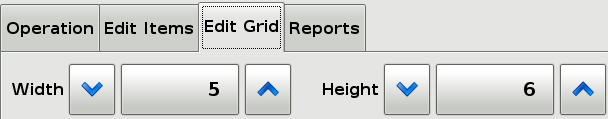
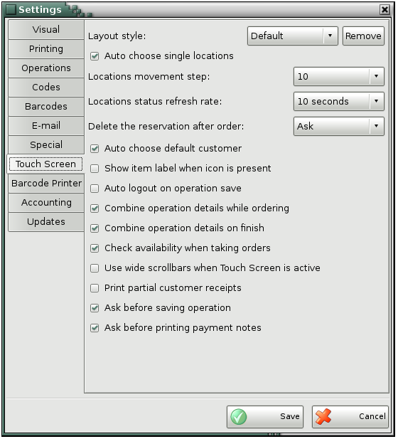
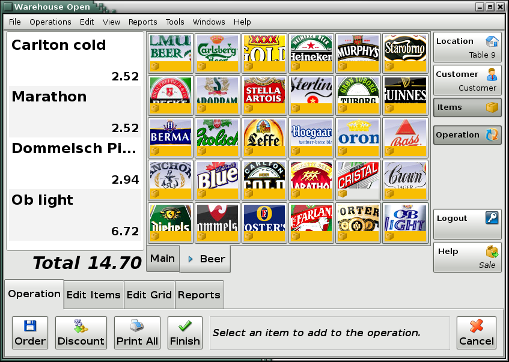
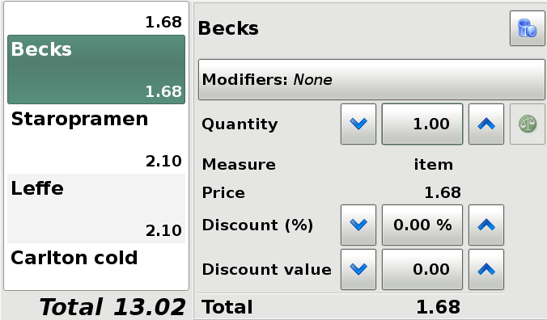
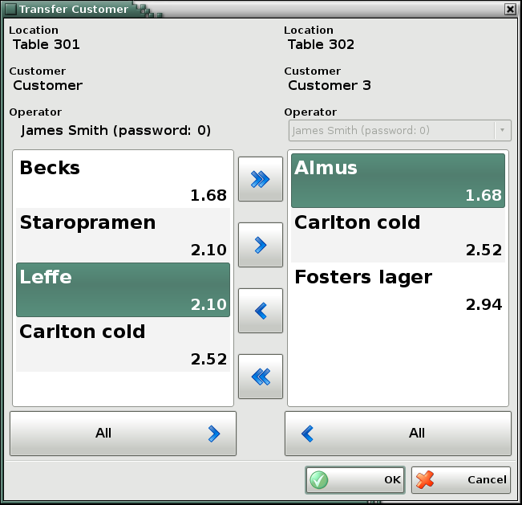
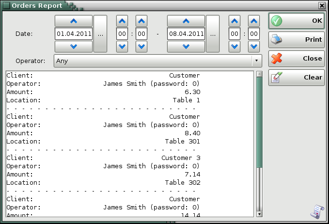

Touch Screen
The Touch Screen module is the easiest way to make sales from a touch screen device. Using this module you can prepare a sale by first selecting the location at which the sale will take place. Then select the customer (partner) to which the items will be transferred, and then select the items that will be transferred. The usage of this module is very similar to the usage of the Sales screen, but it is much more convenient to use in restaurant or small shops environments where sales must be done quickly and without the use of a keyboard.
Touch Screen decreases quantities of chosen items in you warehouse and transfers them to the customer. The operation is completed by payment and issuing of a document. The operation represents the accounting term �Expenses�.
1. Launching
To open the Touch Screen window choose from the menu Operations->Touch
Screen or choose from the Settings window (Other->Settings or click the  icon)
Special->Startup page to be Touch Screen. This way every time a user logs in
the Touch Screen window will open. This is very useful for restaurants where
many people use the same device and need to log in and out of the system
frequently.
icon)
Special->Startup page to be Touch Screen. This way every time a user logs in
the Touch Screen window will open. This is very useful for restaurants where
many people use the same device and need to log in and out of the system
frequently.
2. Configuration
The first time the Touch Screen module is used you need to configure it with which locations, customers (partners), and items the touch screen will be working. The entities chosen will represent the sub set of all the available entities in the system that will be used. There is no practical limitation on how many of each of these entities can be used.
2.1 Permissions
The first time the Touch Screen is used it has to be configured. To do that you need to be logged with a user that has the �Operations->Touch Screen->Edit User Interface� permission enabled at the �Edit->Administration->Permissions ...� menu as shown below.

The �Edit User Interface� permission allows the user to add, remove or edit how the Locations, Customers and Items are presented. It is a good practise to remove this permission for regular users that does not need it.
2.2 Locations

To edit the Locations open the �Edit Locations� action tab. From there you can:
- Add new location to the screen. Click Add and then click on the place you want to add the location(s). After that a screen will let you pick the location(s) you want to be added or create a new one and then choose it.
- Create a Location Group. Create a location group out of a location by clicking �Create Group� and clicking on a location that you want to be converted to a group. This is useful for restaurants where you usually have one location (the restaurant itself) and many tables. This way you can enter the group and a new space will be open where the locations representing the tables can be added. The bigger benefit here is that orders can be placed on each table but when they are finished they are converted to sales and the location for the sale is the location group at the beginning. This way the stock quantities and availability doesn�t need to be tracked per table but per the restaurant. Location groups can also be nested within each other. This is useful for scenarios like a restaurant with two or more floors where you have a root group (the restaurant) and then a group inside it for each floor and then locations in each floor group for each table.
- Remove a location. Remove a group or a location by clicking �Remove� and then clicking on the location that needs to be removed. All the orders that use the location being removed must be finished or cancelled before removing the location. All locations from a group must be removed before removing the group itself.
- Move a location. Move or reorganize a group or a location by clicking �Move� and then dragging the location or click on a location and then use the move panel in the action tab to move the location.
- Rotate a location. Rotate a group or a location by 90 degrees by clicking �Rotate� and then clicking on the location you want rotated.
- Resize a location. Resize a group or a location by clicking �Resize�, then clicking on the location you want resized, and then change its size by using the resize panel in the action tab.
To continue to the Customers screen you need to unselect any actions you may have chosen from the actions tab and then select a location by clicking on it.
2.3 Customers

To edit the Customers open the �Edit Customers� action tab. From there you can:
- Add new customer to the screen. Click Add after that a screen will let you pick the customer(s) you want to be added or create a new one and then choose it.
- Remove a customer. Remove a customer by selecting the customer and clicking �Remove�. All the orders that use the customer being removed must be finished or cancelled before removing the customer.
- Move a customer. Move or reorganize a customer by clicking �Move� click on a customer and then use the move panel in the action tab to move the customer up or down. The Customer that is on the top is marked as being the �Default one�. The Default customer will be used automatically when a location is selected if there are no other orders saved for the location. This behaviour can be changed from the settings tab �Touch Screen�.
To continue to the Items screen you need to unselect any actions you may have chosen from the actions tab and then select a customer by double clicking on it or by selecting it and then pressing �Select�.
2.4 Items

To edit the Items open the �Edit Items� action tab. From there you can:
- Add new item to the screen. Click Add and then click on the place you want to add the item(s). After that a screen will let you pick the item(s) you want to be added or create a new one and then choose it.
- Add Group. Create an item group by clicking �Add Group� and clicking on an empty place where you want the group to be placed. This is useful when there needs to be many items on the screen. This way you can enter the group and a new space will be open where more items or groups can be added. This is also useful for scenarios when you want to organize the items in groups for example you can have groups like: �alcoholic drinks�, �sandwiches� and so on.
Note: To change the name of already created group select �Add Group� and then select the group you want to edit. The �Create Group� dialog will be shown and the name of the selected group will be entered. Then you can edit it and save the changes.
- Remove an item. Remove a group or an item by clicking �Remove� and then clicking on the item that needs to be removed. All items from a group must be removed before removing the group itself.
- Move an item. Move or reorganize a group or an item by clicking �Move� and then dragging the item or click on a item and then use the move panel in the action tab to move the item.
- Change the icon of an item. Change the icon displayed on the item by clicking �Icon� and then clicking on the item you want to change. After that a screen will appear that will allow you to choose a new image file to be used or don�t use any and show only the name of the item by clicking �None�.
- Change the colour of an item. Change the colour of an item by clicking �Color� and then clicking on the item you want to change. After that a screen will appear that will allow you to choose a new background color for the item or the group or use the default one by clicking �Default�.
2.5 Editing the grids

While the locations or the items are shown there is another action tab available called �Edit Grid�. Inside that tab there are controls to change the width and the height of the respective grids.
- In the Locations window this will change the space available for locations on the screen. Please note that this is a �virtual� space and can be bigger than the space displayed. You can see the rest of the space by clicking on an empty space and dragging around. This is useful when you want to place more locations on the screen.
- In the Items window this will change the number of items shown on the screen. This way the space shown can be adjusted so if you want to put more items you can increase the size or to make the item buttons bigger or if you don�t have many items you can make the grid smaller.
2.6 Other settings
The rest of the module settings are available in the �Other->Settings ...� screen in the �Touch Screen� tab.

3. Usage
Once the Touch Screen module is configured a regular user which does not have the �Edit User Interface� permission can enter the module and start working. When a user does not have the �Edit User Interface� permission enabled the action tabs �Edit Locations�, �Edit Customers�, �Edit Items� and �Edit Grid� will not be present. This way the user interface is safe from accidental changes and the confusion for users that does not need this functionality is minimized.
3.1 Selecting Location
The first thing that needs to be selected is which location will be used for the operation.
If you have the option in the settings window �Auto choose single locations� and there is only one location it is automatically selected and the user is forwarded to the next screen, to choose a customer. This is very useful for small shops that are making sales on behalf of only one location and does not need to choose it every time the user logs in.
If there is a single location group on the main screen and the option �Auto choose single locations� enabled in the settings window the location group will be automatically entered and the locations that are in it will be shown instead of showing a screen with only one location group. This is a useful function for restaurants that have a location group for the restaurant and locations in it that represent the tables, or optionally two or more location groups for each floor with locations in them for the tables on each of the floors.
Note: If there is an order already placed on a location and the currently logged user can see it (it is either ordered by the current user or the current user has the �Manage Operators� permission set) then the location will be marked with the partner icon .
After the location is selected the next step is to select a customer.
3.2 Selecting a customer
A customer (partner) represents the person on which behalf the sale will be finalized to. This can be a group of people with a single bill in the restaurant case.
If the option �Auto choose default customer� is set and there are no other customers on the table that the current user can see the default customer (the one ordered at the top of the list of customers) will be used and the user will be forwarded to the next screen.
If the option �Auto choose default customer� is set and there is a single customers on the table that the current user can see then this customer is used and the user is forwarded to the next screen.
If there are more than one customer on the table that the current user can see then the list of customers is shown to the user to let him pick the customers he wants to work with.
To add a new customer press the �New� button on the �Customer� action tab. A list of the preselected customers will appear. If you want to add a customer that is not present there press the �Other� button on the dialog and a new dialog will appear with all the partners available in the system. Additionally you can create a new partner from this dialog and use it by pressing �OK�.
To select the user and go to the next screen double click on the user or select the user and press the �Select� button.
Note: If the currently logged user has the �Manage Operators� permission he can see and manage the orders made by other operators.
3.3 Selecting items
To add items to the operation press the button of the item you want to add. If the item is contained in an item group then you can enter the item group by pressing the button of the item group. If you want to go back to the item group that contains the current group you can do that by pressing the tab representing the name of the group located below the items.
If the option �Combine operation details while ordering� is enabled then when pressing on an item button multiple times the items will be combined in to a single order detail and only the quantity of the items ordered will be increased. If the option �Combine operation details while ordering� is disabled then every time an item button is pressed a new item detail will be created.
Note: If the operation contains items from previous orders and the user orders of the same item again the items will not be combined with the items ordered before even if the �Combine operation details while ordering� option is enabled. The reason for this is to make sure that if the user has printed a non fiscal receipt for the saved order and he prints a new non fiscal receipt for the newly ordered items the new non fiscal receipt will not contain already printed items. This will guarantee that the sum of all the non fiscal receipts is not greater than the operation total.
3.4 Editing operation details

To edit or delete an order detail press on the detail you want to edit. A new screen will appear on the right allowing you to edit the quantity and discount of the current item. To delete the item detail you need to enter a quantity 0 for the detail and save the operation. If you press on the Modifiers button you will be able to select from a set of labels that allow you to add additional information to the order for the kitchen personel . For example you can add labels like "No Salt" so the coock in the kitchen will know not to add any salt to the selected item. There are a set of predefined labels available to you but you can always add or remove labels using the buttons on the bottom of the details screen.Once finished with changing the modifiers you can press the Modifiers button again to show the quantity and price information for the selected detail.
3.5 Saving and finishing the operation
To save the order from the actions tab �Operation� press the �Order� button.
To save the order and print a non fiscal receipt for the newly ordered items press �Order and Print�.
To save the order as a sale, close the order and print a fiscal receipt press �Finish�.
To cancel the order press �Cancel�.
To logout press �Logout�.
Note 1: If the option �Combine operation details on finish� is selected then all the same items ordered will be combined before saving the sale and printing the non fiscal receipt.
Note 2: If the option �Auto logout on operation save� is selected then if any of the buttons �Order�, �Order and Print�, �Finish� or �Cancel� is pressed and confirmed the current user will be automatically logged out after the operation is saved. This is useful for restaurants or other busy places where many operators use the same terminal and need to save and logout their orders as fast as they can.
3.6 Transferring a customer

In some cases when there is already an order you may want to change some of the order properties. For example you may want to change the location if the customer has decided to move to another table. you may want to join two orders if two customers want to pay the bill together or you may want to split an order if the customers on the table have decided to pay separately. you may want to change the customer if the customer has decided that he needs an invoice and the customer details have to be entered. You may want to change the user that is servicing a particular order if his or her shift has ended or if the customer has moved to a table serviced by another user.
In such cases a useful function is the �Transfer� button from the �Customer� action tab. In order to use this functionality you need to follow the following steps:
- Select a customer that you want to transfer
- Press the �Transfer� button
- Select a destination location
- Select a destination customer or add a new one by pressing �New�
- From the dialog shown select destination user
(if the currently logged user has the �Manage Operators� permission). Then use
the buttons  and
and  to move a single item between the selected operation
details. Or use the
to move a single item between the selected operation
details. Or use the  and to move all
the items from the selected operation details.
and to move all
the items from the selected operation details.
- Press �OK� to save the changes
3.7 Creating reports

The "Reports" action tab gives us the ability to quickly display or print information about the recent activity on the system. The reports available are:
- Orders Get a list of all the currently pending orders. If the operator has the "Manage Operators" permission then the report can be filtered by user or a report for all users can be created. If the operator does not have that permission enabled the the report shows only the orders for the current user.
- Sales Get a list of all the finalized sales. If the operator has the "Manage Operators" permission then the report can be filtered by user or a report for all users can be created. If the operator does not have that permission enabled the the report shows only the sales made from the current user.
�2006-2015 Microinvest, All rights reserved